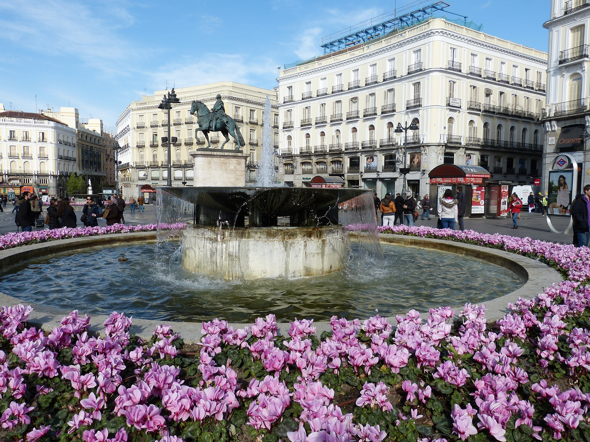
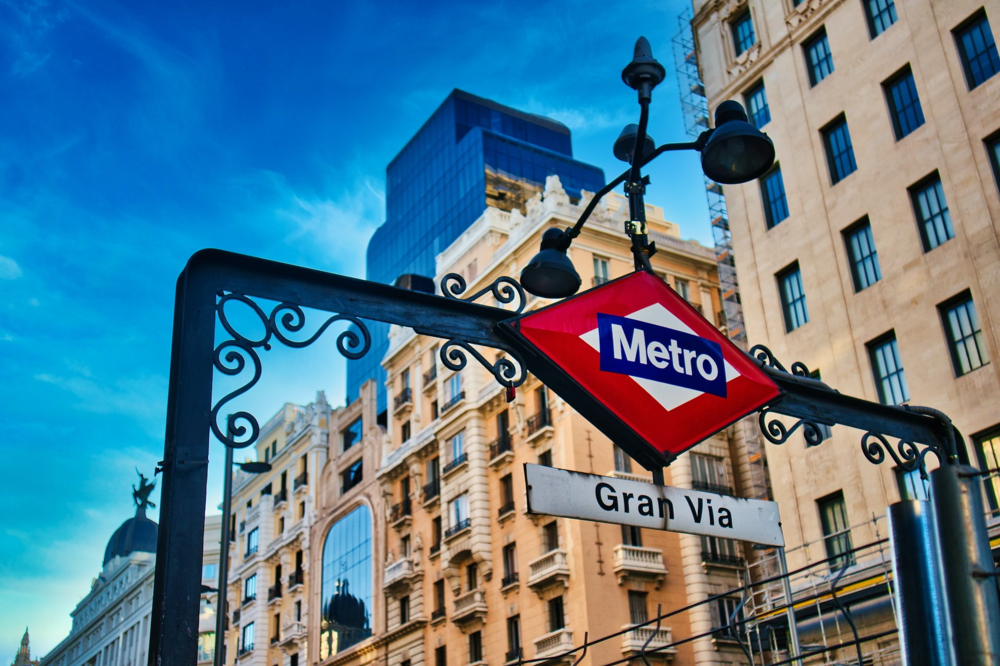

Heritage
Madrid, cheerful and vibrant at all hours, is famous for being
an open city with all kinds of people from anywhere in the
world.
In addition to its famous museums, busy streets dotted with all
kinds of shops, restaurants with world cuisine and unbeatable
nightlife, Madrid will surprise you with its tranquil historic
spots that charm everyone walking by. Here you'll find
traditional family-run, century-old bars where friends meet up
for a drink, every style of neighbourhood and cultural centres
that offer up an alternative type of tourism.
Madrid's authenticity is hard to beat. It is welcoming and
diverse. Madrid is, without a doubt, one of Europe’s most
interesting cities.
Art, Culture and Leisure
Museums

Anyone in search of culture will find some of the most
important museums in the world, such as the Prado, Reina Sofía
or Thyssen. But we must not forget smaller options, full of
charm, such as the Sorolla Museum or cultural centres like the
Matadero, Conde Duque, Fernán Gómez or Galileo which are
continuously offering innovative exhibitions, concerts, guided
tours, etc.
Madrid is a major cultural capital in Europe. Explore the
places and characters that raised the city to the top of the
art and culture scene.
Iconic places

Walking around Madrid means coming across iconic spots such as
the stunning Royal Palace, the Plaza Mayor with 400 years of
history, the buzzing Puerta del Sol, the famous Gran Vía full
of shops, or the four tallest towers in Spain.
Each neighbourhood offers a different experience: La Latina is
ideal for tapas, Las Letras has the perfect combination of
literature and fine dining… But Madrid also means relaxing in
enormous and charming green spaces such as the Retiro or El
Capricho parks.
Shopping

Fashionistas will find all options: luxury shops on the Golden
Mile, vintage establishments in areas such as Fuencarral, new
designer markets like the Mercado de Motores, and craft
workshops and bookshops over 100 years old.
At dusk, some of the city’s viewpoints will surprise you with
unique sunsets, at the Temple of Debod or the rooftop of the
Círculo de Bellas Artes, for example. At the end of the day
you can enjoy the legendary Madrid's nightlife with live music
and all kinds of ambiences.
Gastronomy
When it's time to eat, Madrid has many different options, each
more appealing than the last. On the one hand, traditional bars
where you can discover the old-fashioned, unpretentious
atmosphere known as ‘castizo’, and why tapas are so much fun.
On the other hand, there are its cutting-edge restaurants like
DiverXO and traditional markets that have been turned into new
gourmet spaces, such as San Miguel, which has become a true
gastronomic shrine. In Madrid, the time is always ripe to enjoy
an animated, urban atmosphere. For example, the increasingly
famous weekend brunches in enclosed glass terraces, courtyards,
rooftops, etc.